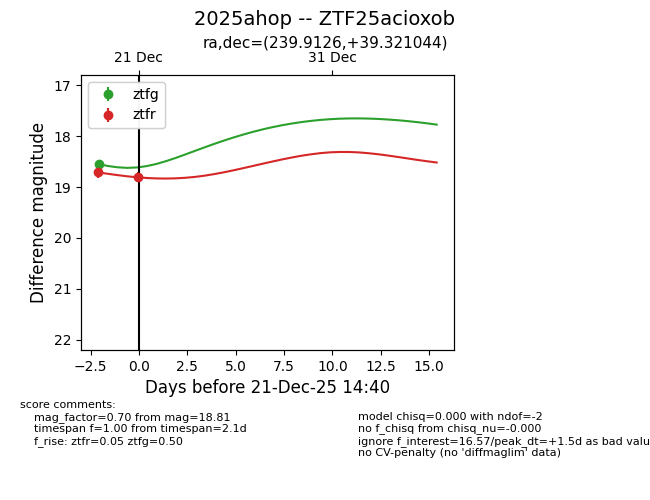
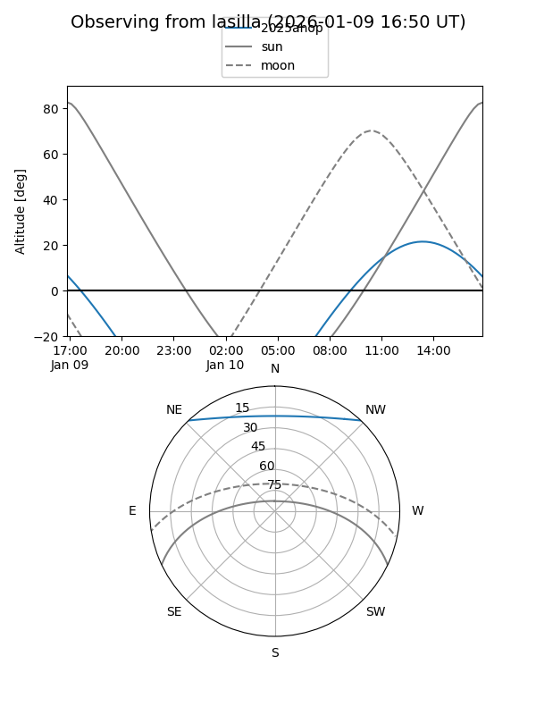
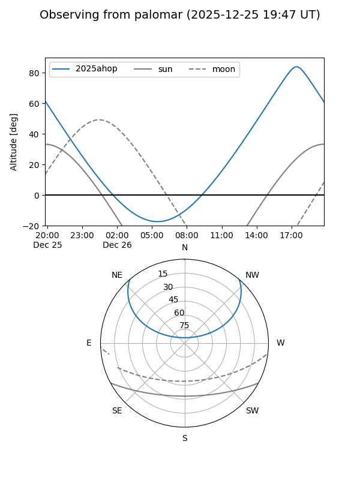
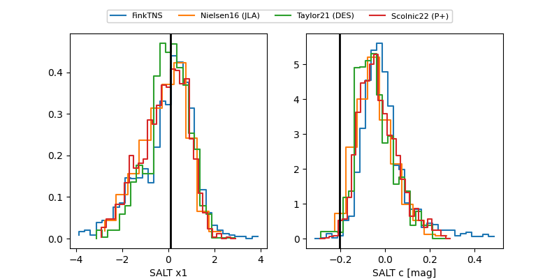

2025ahop
Target 2025ahop at 2025-12-31 17:00
Aliases and brokers:
FINK:
Lasair:
ALeRCE:
TNS:
YSE:
alt names
ZTF25acioxob (ztf,fink_ztf)
2025ahop (tns,yse)
Coordinates:
equatorial (ra, dec) = 239.9126,+39.32104
equatorial (HMS+DMS) = 15:59:39.03,+39:19:15.76
galactic (l, b) = (62.6794,+49.29087)
Flags:
Photometry:
last atlaso=19.23, ztfg=18.55, ztfr=18.81
1 atlaso, 1 ztfg, 2 ztfr detections
Lightcurve

Visibility


Additional plots
